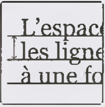
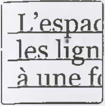
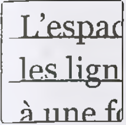

Le sens ne repose pas uniquement sur les caractères. Ce sont l'utilisation logique de l'espace entre les caractères, la façon dont les mots sont délimités les uns par rapports aux autres et la disposition des composants d'une phrase qui rendent le contenu intelligible.
L'interlettrage découle de la chasse d'une police de caractère réel (fig.27), et comprend aussi les espaces avant et après (fig.28), également appelés approches, c'est-à-dire les zones blanches nécessaires pour la préparation et l'assemblage des mots dans le texte. Le talus (-> p.61) détermine la distance entre les caractères depuis l'époque de la composition à chaud.
Les caractères d'une police ont des valeurs de largeur, ou chasses, différentes. La chasse est déterminée par la largeur du caractère (-> p.93, l'espacement d'une police de caractères) et la distance entre les lettres (-> p.91-96, "Le design d'une police de caractères").
L'espace mot découle de la chasse ou de la distance entre les lettres. L'augmentation de la distance entre les mots ou les lettres est appelée espacement. L'interlettrage ou l'espacement entre les mots doivent être cohérents dans un texte continu (-> p.91-96, "Le design d'une police de caractères").
  